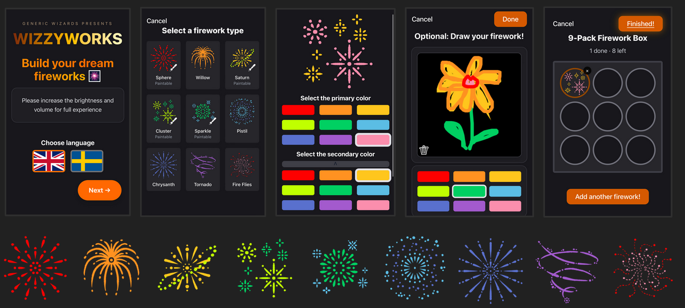
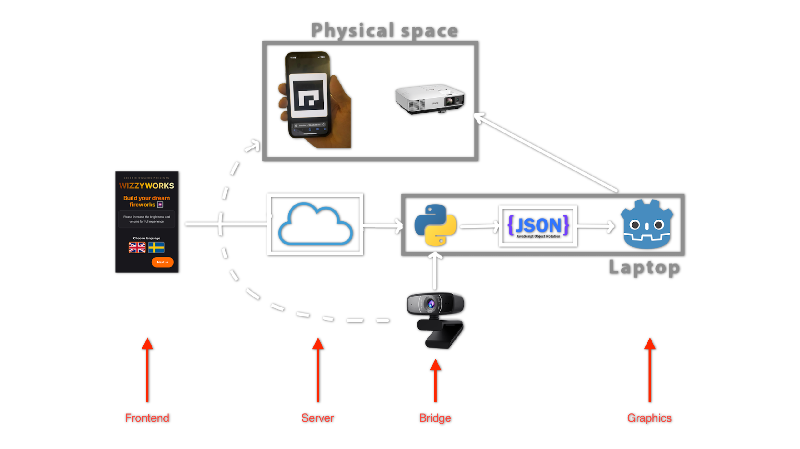

Wizzyworks is an immersive experience in which a visitor gets to design and shoot off fireworks. Any visitor may take out their smartphone and scan a QR code, which takes them to a website where they can customize up to nine different fireworks, through shapes and colors or by drawing on a canvas. When done, the visitor goes to the large screen and places the phone standing straight on the floor. The visitor taps on the phone to light the firework, then backs off from the launch zone. The position of the phone is determined by the camera, and the fireworks are fired from the phone, into the big screen, generated based on the custom input.
The project was subsequently exhibited at Tekniska Museet.
Our goal was to provide a fun, personalized, safe and immersive firework experience that encourages creativity, by turning simple custom drawings and designs into realistic and vibrant fireworks. A goal was also to develop a continuity between your phone and a larger experience. Essentially: Something magical for the kids (and adults) at the museum.
In the project we used a relatively wide assortment of technologies simply in order to get the project running. We decided to use phones to create fireworks as it made it easier for most people to participate, and thus we needed a website on which to create the fireworks as well as a server to allow the phones to communicate with the larger screen. This was developed in React and communicated with the server through websockets.
To scan the position of the firework we used a camera which would detect small QR-codes (ArUco) displayed on the phone, using python and OpenCV. These would then be matched with the firework data passed over the internet, combining position and data. This is all done in python, and formatted using json, as it is a very standard approach. The jsons are then interpreted by the game engine Godot which renders the firework in the correct position. Godot was used because it is a lightweight development environment that's easy to modify, which made it easier to set-up the project, work on it simultaneously, and try different things. The Godot program with the fireworks was displayed on a giant projecter at Tekniska Museet, in order to get an impactful experience. Large speakers were added to ensure the blast of the fireworks felt both impressive and immersive.
Some of the challenges are to track the position of the user's phone relative to the big screen, which requires calibrated cameras and consistent positioning. Another challenge was to create realistic and appealing visuals and sound quality based on provided custom data, and to make the experience engaging. This was a trial and error kind of thing, which was made easier by having an early prototype that we could test. Due to this we were able to get a better sense of what people chose to interact with, and thus what was “engaging”.
MRlin is a spell dueling game with pretty visuals created in the AGI course some years ago. We took inspiration from this game and had as a goal to focus a lot on the graphics part of the project. We wanted the visuals to be pretty and feel like real fireworks. In the beginning we also thought of using the same method of using the phones gyroscope in order to recognize when the phone had been placed down, in the end we did found another way we thought would work better.
Another AGI project we looked at beforehand was Peak Panic. This project is a multiplayer experience with phones, where the players use their phones to connect to a single game session to ski on a single big screen. Similar to this game, our project was a single screen with a large amount of phone connections, creating similar kinds of challenges and opportunities.
This paper presents an algorithmic approach for simulating fireworks animation based on particle systems and physical dynamics principle. This paper gave greater understanding into how fireworks can be manually simulated, and how the built in particle system in Godot could be manipulated.
During the project a lot of insights have been gained. For one, focusing on accuracy of positioning may be wasted time, as people generally are satisfied if things look somewhat like they should. If the firework is half a meter off, visitors will still mainly be focusing on the anticipation of seeing their own fireworks.
One of the most important parts of the whole experience was customizing the fireworks on the phone. Although it did not happen too often, we found out that parents had customized their fireworks with their children for quite a long time, only to have a bug on the website or a connection error, which forced them to reload the website and lose all their designs. We minimized risk by adding re-send functionality when sending the fireworks to the server, however, there we some who still got that problem.
Another very important part of the experience was the physical space. The actual experience of placing the phone down, pressing “Fire” and then running back to watch the show was something we anticipated was important in the ideation phase, but was during the presentation brought to life when we observed children (and adults) running back to not be too close to the firework launch. If we had chosen to launch the fireworks directly from the user's phones, it would not have been the same experience.


I set up the initial Godot project, and explored different ways in which we could create fireworks, including custom particle generators using Godot's particle shading. I also worked some on the communication between different parts of the project, ensuring information was correctly decoded and applied on the Godot side of things. In the later stages of the project I also took responsibility for some of the frontend features, including the visual representations of the fireworks on the website, and ensuring the site was understandable and easy to interact with.

I implemented a realistic-looking night sky. This sky shader was implemented in Godot with many parameters, making it highly customizable. I also used the Godot engine to add lighting effects from the fireworks that light up the surrounding sky and add glowing bloom effects to particles. The firework effects I created were the Pistil and Fire Flies. Finally, I helped with the front end, expanding the single-firework design process to a firework-box design process and setting up the website’s user flow.

I developed the bridge component of the project, implemented in Python. The bridge is capable of handling WebSocket connections to receive firework data, using OpenCV to capture ArUco markers, and combining them to prepare the firework data files for the graphics component of the project. I also helped with the frontend and the server development so things go smoothly. I deployed the server to Azure Container Apps so we can run the project over public internet. In the later stage of the project, I helped with creating more types of fireworks (e.g. willow, chrysanthemum) and one type of the firework show in the graphics component.

I developed the server component of the project using Python. The server establishes a connection with each user's phone and a connection with the bridge component. It assigns an ID to each user's phone and receives firework data from them via WebSocket and forwards it to the bridge using UDP protocol. It reuses ID's to prevent running out of available ID's when many users connect and disconnect frequently. I also helped develop the graphics and implemented two custom firework shader types in godot (saturn and tornado). I also experimented with some sound effects for the fireworks.

I initiated the frontend development by designing the project’s main layout and overall user flow, establishing the foundation before it was later reworked. I also created a firework preview viewer using Three.js, allowing users to view different explosion types before making a selection. This feature was ultimately not included in the final product. I was responsible for creating and editing the project’s audio assets, including firework explosion sounds, bass effects, and cutting and editing the music used in the firework show. Additionally, I created the firework launching animations in Blender and implemented it on the frontend. Separately, within Godot, I created the Cluster and Sparkle firework types.